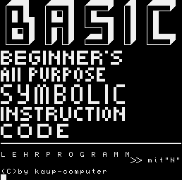
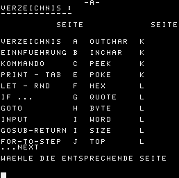
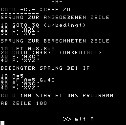

Zeichensatz UTF-8+Z1013()+CTRL()-ohne Umlaute(äöüß)
1 G.100
95 STOP
96 STOP
97 STOP
100 P.' '
110 P.' '
120 P.' '
130 P.' '
140 P.' '
150 P.' '
160 P.' '
170 P.' '
175 P.
180 P.''
190 P.' '
200 P.' '
210 P.' '
220 P.' '
230 P.' '
240 P.' '
250 P.' '
260 P.' '
270 P.' '
280 P.' '
290 P.' '
300 P.' '
310 P.' '
320 P.' '
330 P.' '
335 P.''
340 P.'L E H R P R O G R A M M'
350 TAB(23);P.' mit"N"'
360 P.'(C)by kaup-computer'
370 A=INC.
380 IFA=78G.390
390 OUTC.12
400 P.' -A-'
410 P.'VERZEICHNIS :'
420 P.'-------------'
430 P.
440 TAB(10);P.'SEITE SEITE'
480 P.
490 P.'VERZEICHNIS A OUTCHAR K'
495 P.
500 P.'EINNFUEHRUNG B INCHAR K'
505 P.
510 P.'KOMMANDO C PEEK K'
515 P.
520 P.'PRINT - TAB E POKE K'
525 P.
530 P.'LET - RND F HEX L'
535 P.
540 P.'IF ... G QUOTE L'
545 P.
550 P.'GOTO H BYTE L'
555 P.
560 P.'INPUT I WORD L'
565 P.
570 P.'GOSUB-RETURN I SIZE L'
575 P.
580 P.'FOR-TO-STEP J TOP L'
581 P.'...NEXT'
585 P.
586 P.'WAEHLE DIE ENTSPRECHENDE SEITE'
587 P.;P.
590 A=INC.
600 GOSUB 5000
640 P.' -B-'
650 P.'EINFUEHRUNG :'
660 P.'-------------'
670 P.'*DAS LEHRPROGRAMM SOLL IHNEN DIE'
680 P.'PROGR.SPRACHE BASIC ERLERNEN HELFEN.
690 P.
700 P.'*DER BEREICH VON 1-80 IST FUER'
705 P.
710 P.'PRAKTISCHE UEBUNGEN VORGESEHEN.'
715 P.
720 P.'*VERMEIDEN SIE EIN EINSCHREIBEN'
725 P.
730 P.'IN DEN BEREICH AB 85 !!!'
735 P.
740 P.'*DER ABLAUF WIRD MITGETEILT'
745 P.
750 P.'*NOTIERE DIE BEISPIELE !'
755 P.
760 P.'*FUEHRE DIE BEISPIELE WIE AN-'
765 P.
770 P.'GEGEBEN AUS!!!'
775 P.
776 P.
780 P.'***VIEL ERFOLG BEIM LERNEN***'
785 P.;P.;P.
790 P.' mit A'
800 A=INC.
810 GOSUB 5000
850 P.' -C-'
860 P.'KOMMANDO :'
870 P.'---------'
880 P.'KOMMANDOS-OHNE ZEILENNUMMER-'
890 P.' WERDEN SOFORT AUSGEFUEHRT'
895 P.
900 P.'RUN -R.-PROGR.START AB ZEILE 0'
910 P.'GOTO 20 -START AB ZEILE 20'
915 P.
920 P.'LIST -L.-ANZEIGE DES PROGRAMMS'
925 P.
930 P.'LIST 50 -ANZEIGE AB ZEILE 50'
935 P.
940 P.'NEW -PROGRAMM WIRD GESPERRT'
950 P.'BYE -B.-RUECKSPRUNG z.MONITOR'
952 P.
955 P.'END -ERWEITERN d.SPEICHERS'
957 P.
960 P.'CLOAD-CL.-LADEN VON KASSETTE'
962 P.
965 P.'CSAVE-CS.-RETTEN AUF KASSETTE'
967 P.
970 P.'CS."name"-MIT ANGABE d.TITELS'
975 P.
980 P.'PRINT -P.-ALS RECHNERMODUS'
990 P.' (GANZZAHLIG-s.PRINT)'
995 P.
1000 TAB(20);P.' mit A'
1010 A=INC.
1020 GOSUB 5000
1030 P.' -D-'
1035 P.
1040 P.'BEFEHLE :'
1043 P.'--------'
1045 P.
1050 P.'*WERDEN MIT EINER ZEILENNUMMER'
1055 P.
1060 P.' VERSEHEN Bsp:10 LET A=5'
1065 P.
1070 P.'*ES IST GUENSTIG,DIE ZEILEN IN'
1075 P.
1080 P.' 10-SCHRITTEN ZU STAFFELN.'
1085 P.
1090 P.'*DAMIT SIND SPAETERE ERGAENZUN-'
1095 P.
1100 P.' GEN MOEGLICH'
1105 P.
1110 P.'*2 BEFEHLE KOENNEN AUF EINE'
1115 P.
1120 P.' ZEILE KOMMEN,WENN SIE DURCH'
1125 P.
1130 P.' SEMIKOLON GERENNT WERDEN'
1135 P.
1140 P.'*NACH JEDER EINGABE IST ENTER'
1145 P.
1150 P.' ZU BETAETIGEN'
1155 P.
1160 P.'*BEACHTE KURZFORM DER BEFEHLE'
1165 P.
1170 P.' mit A'
1175 P.
1180 A=INC.
1190 GOSUB 5000
1200 P.' -E-'
1205 P.
1210 P.'PRINT -P.- :DRUCKEN,AUSGEBEN'
1212 P.'-------------'
1215 P.
1220 P.'10 LET A=5 10 PRINTA'
1230 P.'20 LET A=A+2 20 PRINTB'
1240 P.'30 PRINT A 30 PRINTC'
1250 P.'40 LET A=A+A 40 PRINT'
1260 P.'50 PRINT A 50 P.A,B,C'
1270 P.'RUN(enter) RUN(enter)'
1280 P.
1290 P.'10 P.AUSGGABE VON A u.B'
1300 P.'20 P.IN HEXADEZIMALER FORM'
1310 P.'30 P.A'
1320 P.'40 P.'
1330 P.'50 P.B'
1350 P.
1360 P.'10 P.A 10 P.*****'
1370 P.'20 P. 20 P.'
1380 P.'30 P.A,B 30 P. ***'
1390 P.'40 P.A;P.B 40 P.'
1400 P.'50 TAB(20);P.AB 50 P. *'
1405 P.
1410 P.'10 A=2,B=3 10 A=2'
1420 P.'20 P.A=,A 20 P.A'
1430 P.'30 P.B=,B 30 P.123456'
1440 P.'40 P.A+B=,A+B 40 TAB(3);P.A',
1450 P.'50 P.A*B=,A*B 50 P.#2,A'
1455 P.
1460 P.'P.5+3 P.5*3 P.8-3 P.8/2'
1470 A=INC.
1480 GOSUB 5000
1500 P.' -F-'
1505 P.
1510 P.'LET :LASS WERDEN ZU'
1520 P.'----'
1530 P.'10 LET A=1 10 LET A=1'
1540 P.'20 PRINT A 20 LET A=A+1'
1550 P.'RUN(enter) 30 P.A'
1555 P.
1560 P.'LET KANN MAN WEGLASSEN'
1565 P.
1570 P.'10 A=2,B=4 10 A=2,B=4,C=3'
1580 P.'20 C=A+B 20 D=(A+B)/C'
1590 P.'30 P.A,B,C 30 P.A,B,C,D'
1595 P.
1600 P.'10 A=RND(6) =ZUFALLSZAHL'
1610 P.'20 P.A'
1615 P.
1620 P.'REICHEN DIE VARIABLEN NICHT,'
1625 P.
1630 P.'VERWENDE @(i) mit i=1,2,3,...'
1635 P.
1640 P.'10 @(1)=10'
1650 P.'20 @(2)=20'
1660 P.'30 P.@(1),@(2)
1665 P.
1670 P.'10 A=2,B=3'
1680 P.'20 A=B'
1690 P.'30 A=A+2'
1700 P.'40 A=A*B'
1710 P.'50 A=A+A'
1720 P.'ERGEBNIS ? 60 P.A mit A'
1730 A=INC.
1740 GOSUB 5000
1800 P.' -G-'
1805 P.
1810 P.'IF :ES WERDEN BEDINGUNGEN FUER'
1815 P.'---'
1820 P.' EINE WEITERE ANWEISUNG ABGE-'
1830 P.' FRAGT'
1835 P.
1840 P.'*STEHT IMMER AM ZEILENANFANG'
1845 P.
1850 P.'MOEGLICHE AUSFUEHRUNGEN'
1855 P.
1860 P.'10 IF A=2 P.ROT'
1863 P.
1865 P.'10 IF B<5 OUTC.12'
1867 P.
1870 P.'10 IF C>7 GOSUB 100'
1875 P.
1880 P.'10 IF D<=8 POKE E,F'
1885 P.
1890 P.'10 IF E>=3 GOTO 200'
1895 P.
1900 P.'10 IF F#5 LET X=12'
1905 P.
1910 P.'10 IF A+B=10 INPUT'
1915 P.
1920 P.'Bsp:10 INPUT A'
1930 P.' 20 IF A=2 G.30'
1940 P.' 30 P.ROT'
1950 P.' 40 IF A>2 G.10'
1960 P.' mit A'
1970 A=INC.
1980 GOSUB 5000
2000 P.' -H-'
2005 P.
2010 P.'GOTO -G.- :GEHE ZU'
2015 P.'----------'
2020 P.'SPRUNG ZUR ANGEGEBENEN ZEILE'
2025 P.
2030 P.'10 GOTO 30 (unbedingt)'
2040 P.'20 P.ABC'
2050 P.'30 P.XYZ'
2055 P.
2060 P.'SPRUNG ZUR BERECHNETEN ZEILE'
2065 P.
2070 P.'10 LET A=8,B=5'
2080 P.'20 GOTO (A*B) (UNBEDINGT)'
2090 P.'30 P.ABC'
2100 P.'40 P.XYZ'
2105 P.
2110 P.'BEDINGTER SPRUNG BEI IF'
2115 P.
2120 P.'10 A=5'
2130 P.'20 IF A=5 G.40'
2140 P.'30 P.ABC'
2150 P.'40 P.XYZ'
2155 P.
2160 P.'GOTO 100 STARTET DAS PROGRAMM'
2165 P.
2170 P.'AB ZEILE 100'
2172 P.;P.;P.
2180 P.' mit A'
2190 A=INC.
2200 GOSUB 5000
2300 P.' -I-'
2305 P.
2310 P.'INPUT-INP.:EINGABE-TASTATUR'
2315 P.'----------'
2320 P.'10 INP.A 10 INP.WERT ,B'
2330 P.'20 P.B=,A 20 INP. D'
2335 P.
2340 P.'10 INP.A'
2350 P.'20 IF A=2 P.BLAU'
2360 P.'30 IF A=3 P.ROT'
2365 P.
2366 P.
2370 P.'GOSUB-RETURN :SPRUNG ZUM BASIC'
2375 P.'-------------'
2380 P.'-GOS.-RE.- UNTERPROGRAMM'
2385 P.
2390 P.'10 A=H.(EF80),I=H.(C9)'
2400 P.'20 GOSUB 70'
2410 P.'30 GOSUB 70'
2420 P.'40 GOS.70'
2430 P.'50 GOS.70'
2440 P.'60 GOS.70'
2450 P.'70 A=A+1,I=I+1
2460 P.'75 PO.A,I'
2470 P.'80 RETURN'
2475 P.
2480 P.'IM U-PROGRAMM KOENNEN AUCH'
2485 P.
2490 P.'ANDERE ANWEISUNGEN STEHEN'
2495 P.
2500 P.' mit A'
2510 A=INC.
2520 GOSUB 5000
2550 P.' -J-'
2555 P.
2560 P.'FOR-TO-STEP...NEXT:DURCHLAEUFE'
2570 P.'------------------'
2580 P.'-F.-TO-STE.- -N.-'
2585 P.
2590 P.'10 FOR A=0 TO10 10 A=H.(EF80)'
2600 P.'20 P.A,A*A,A*A*A 20 F.I=0 TO31'
2610 P.'30 N.A 30 P.-,'
2620 P.' 40 N.I'
2625 P.
2630 P.'10 F.A=0 TO10 STEP2'
2640 P.'20 P.A,A*A,A*A*A'
2650 P.'30 P.'
2660 P.'40 N.A'
2665 P.
2670 P.'10 F.A=1 TO5 10 P.WARTE'
2680 P.'20 F.B=1 TO2 20 F.I=0 TO5000'
2690 P.'30 P.A*B 30 N.I'
2700 P.'40 N.B 40 P.SCHLLEIFE'
2710 P.'50 P.'
2720 P.'60 N.A'
2730 P.
2740 P.'10 F.N=-5 TO5'
2750 P.'20 P.#2,N,|,'
2760 P.'30 TAB(N*N);P.*'
2770 P.'40 P.'
2780 P.'50 N.N'
2785 P.' mit A'
2790 P.;P.
2800 A=INC.
2810 GOSUB 5000
2820 P.' -K-'
2825 P.
2830 P.'OUTCHAR:DEZIM.in ZEICHEN-EFFEKTE',
2833 P.'-------'
2835 P.'-OUTC.-'
2836 P.
2840 P.' 5 OUTC.12 5 OUTC.12'
2850 P.'10 F.I=4 TO256 10 OUTC.203'
2860 P.'20 OUTC.0+I 20 OUTC.65'
2870 P.'30 TAB(2) 30 OUTC.197'
2880 P.'40 N.I 40 OUTC.138'
2885 P.
2890 P.'INCHAR:VARIABLE WIRD z.dezim.'
2900 P.'------ WERT DER TASTE'
2910 P.'-INC.-'
2920 P.
2930 P.'10 A=INC. 10 A=INC.'
2940 P.'20 P.A 20 IF A=70 P.O;G.50'
2950 P.' 30 IF A#70 P.JA'
3000 P.' 40 G.10'
3010 P.' 50 STOP'
3015 P.
3020 P.'PEEK:SPEICHER- POKE:SPEICHER-'
3025 P.'---- ----'
3030 P.'-PE.-ZUGRIFF -PO.-BELEGEN'
3035 P.
3040 P.'10 F.I=0 TO10 60 P.A'
3050 P.'20 PO.H.(EF80)+I,140 70 N.I'
3060 P.'30 N.I'
3070 P.'40 F.I=0 TO10'
3080 P.'50 A=PE.(H.(EF80))+I mit A'
3110 A=INC.
3120 GOSUB 5000
3200 P.' -L-'
3205 P.
3210 P.'HEX :HEXADEZIMAL in DEZIMAL'
3215 P.'----'
3220 P.'10 A=H.(1A) A=H.(1A) P.H.(1A)'
3230 P.'20 P.A P.A'
3235 P.
3240 P.'QUOTE :ZEICHEN in DEZIMAL'
3245 P.'------'
3250 P.'10 X=A X=A'
3260 P.'20 P.X P.X'
3265 P.
3270 P.'BYTE :DEZIMAL in HEXA(2STELLEN)'
3275 P.'-----'
3280 P.' BYTE(65)'
3285 P.
3290 P.'WORD :DEZIMAL in HEXA(4STELLEN)'
3295 P.'-----'
3300 P.' WORD(1023)'
3305 P.
3310 P.'OUTC. :DEZIMAL in ZEICHEN'
3315 P.'------'
3320 P.' OUTC.65'
3325 P.
3330 P.'SIZE :...BYTES FREIER SPEICHER'
3335 P.'-----'
3340 P.' P.SIZE'
3345 P.
3350 P.'TOP :1.FREIER PLATZ NACH PROGR.'
3355 P.'----'
3360 P.' P.TOP mit A'
3370 A=INC.
3380 GOSUB 5000
4900 STOP
5000 IF A=65 G.400
5010 IF A=66 G.640
5020 IF A=67 G.850
5030 IF A=68 G.1030
5040 IF A=69 G.1200
5050 IF A=70 G.1500
5060 IF A=71 G.1800
5070 IF A=72 G.2000
5080 IF A=73 G.2300
5090 IF A=74 G.2550
5100 IF A=75 G.2820
5110 IF A=76 G.3200
255